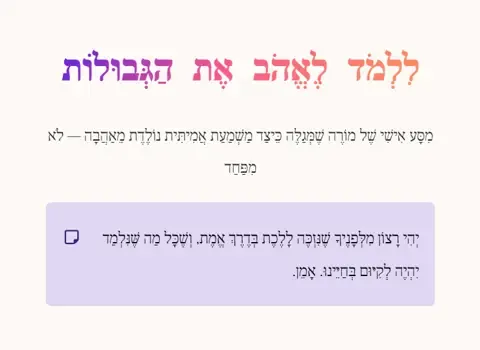

משמעת וסמכות בכיתה
כל חומרי המשמעת במקום אחד: מדרגים של עשרות כלי משמעת, מדריכים לניהול הכיתה, כלים מעשיים, משנת הרב יעקובזון, התורה מול הפסיכולוגיה והתמודדות עם הפרעות התנהגות
73 פריטים
מפתחות ומדרגים – כל כלי המשמעת במקום אחד (8)
🔑 להתחיל כאן. מדרגים מלאים של כלי משמעת, מהמניעה השקטה ועד התגובה החריפה, ומפתח לכל דפי המשמעת.

מפת הדרכים למשמעת בכיתה
תכננתם שיעור מהמם, ופתאום התנהגות של תלמיד אחד הרסה הכול. הפרעות בלי סוף, עד שכמעט אי אפשר להתקדם. הרגשתם יותר…

ספר ניהול הכיתה — מדריך מקיף למחנך
כל השיטות, הכלים והחכמה של מורים מנוסים — ב מדריך אחד שלם, מהמיידי ועד לאסטרטגי

משמעת – קטלוג
קטלוג משמעת בכיתה טוען... 📘 קטלוג מדור משמעת אוסף מסודר של כל הדפים בנושא משמעת כיתתית וסמכות חינוכית 📄 30 דפי…

שיטות משמעת כיתתית – מדרג התערבויות
🎓 שיטות משמעת כיתתית – מדרג התערבויות 50 כלים ותגובות משמעתיות, מסודרים מהתערבות שקטה ועד לצעדים חמורים ברמת ב…

סמכות ללא כוחנות – מפתח כלים מעשיים
📘 סמכות ללא כוחנות – מפתח כלים מעשיים שיטות להטלת משמעת וניהול כיתה מתוך יציבות פנימית, ללא מאבקי כוח ובלי השפ…

80 כלי משמעת – מדרג מלא למורה
🎓 80 כלי משמעת – מדרג מלא למורה מניעה שקטה · הצבת גבולות · תיעוד · פסקי-זמן · תוצאות הגיוניות · צדק מאחה · סנק…

משמעת – מחקר
מדריך עולמי לתוצאות הגיוניות וסנקציות כיתתיות | ארגז כלים מקיף למורה מדריך עולמי לתוצאות הגיוניות וסנקציות כית…

90 כלי משמעת חדשים – מדרג שלם למורה
0 כלי משמעת חדשים – מדרג שלם למורה כלים שלא הופיעו ברשימות הקודמות · שואבים מגישות פדגוגיות גלובליות 6 רמות חו…
מדריכים לניהול הכיתה (14)

ניהול כיתה – מדריך להפחתת שיבושים
סיכום מלא של שיטת לינדה קארדוס להפחתת שיבושים בכיתה.

20 דרכים לתפוס תשומת לב בכיתה רועשת
מסודרות לפי קלות יישום ויעילות מיידית — מהמהיר ביותר לאסטרטגיות ארוכות טווח

השפה השקטה של ניהול הכיתה

מדריך אישי להטלת משמעת בכיתה יסודית
המשמעת החיצונית היא כלי לייצר משמעת פנימית

מדריך למורה: השיעור הראשון - סמכות ומשמעת

מהפלונטר לפדגוגיה: סדנת ניהול שיח ושקט בכיתה
לא עוד כלל שאי אפשר לאכוף. תקציר ממוקד לב, ואחריו תרגול של 10 מצבים אמיתיים מהכיתה — עם משוב מיידי על כל תשובה…

עקרונות התקשורת של גינות

קסם הכיתה
ספר סיפורים קטן למורה, לגננת ולמחנך שרוצים ללמד בשקט, באהבה ובגבולות ברורים — מתוך שיחה חמה עם ורד גיל, הממונה…

פרומפט לבניית מצגת HTML בסגנון "גינות" פרומפט לבניית מצגת HTML בסגנון
וט שבונה מצגות HTML בהמשך המסמך - הפרומפט המלא, מוכן להעתקה-הדבקה 🧱 מבנה השלד קובץ HTML עצמאי יחיד (בלי קבצי C…

איך קובעים כלל של לא לדבר בכיתה - בלי ליפול למלכודת
איך קובעים כלל של "לא לדבר בכיתה" בלי ליפול למלכודת 🤫 איך קובעים כלל של "לא לדבר בכיתה" - בלי ליפול למלכודת שי…

שלושה עקרונות ברזל להטלת משמעת בכיתה
ביעילות, בביטחון, וללא שחיקה מבוסס על משל הסוכריות מבית הכנסת 🍬 המשל: זריקת הסוכריות בבר-מצווה סיפור שמורים מס…

ארבע עצות הוראה חזקות
דוח שנתי עם sidebar-nav דלג לתוכן 📌 דוח שנתי פדגוגי Sidebar קבוע + תוכן ראשי 📌 פתיחה 01 📌 הסבר ברור 02 📌 פעילו…

דוגמא לארבע עצות - ישום
איזהו מכובד? המכבד את הבריות - מערך שיעור איזהו מכובד? המכבד את הבריות מערך שיעור מותאם ללימוד משנת "איזהו מכו…

מדריר לינדה - למשמעת ב 3 שלבים
איך לנהל כיתה ללא רעש 🕊️ איך לנהל כיתה שקטה ולהפחית הפרעות ✨ מדריך למורה – שלוש שלבים ליצירת כיתה ממוקדת, מכבד…
כלים מעשיים – דף לכל כלי (17)
🧰 כלי אחד בכל דף. טכניקות קצרות שאפשר להפעיל בשיעור הבא – מה עושים, מה אומרים ומתי.

לאחוז בתכונה של מבוגר
משמעת מתוך יציבות מדריך מעשי למורה משמעת בלי שחיקה לאחוז בתכונה של מבוגר הסמכות בכיתה מתחילה לא במה שהתלמיד עו…

כלי ה“תקליט שבור”
טכניקה אסרטיבית לניהול כיתה: חוזרים בעקביות, ברוגע ובעקשנות על מסר קצר — בלי להיגרר לוויכוח, כעס, איומים או מש…

כלי “הפרד ומשול”
טכניקת התערבות מיידית למורה: לא כדי להעניש ברגע הסערה — אלא כדי לנתק מגע, להרגיע את המערכת, ולמנוע מהשיעור כול…

יציבות המורה המבוגר האחראי בכיתה
לפני שמנהלים כיתה — מנהלים את עצמנו. מורה יציב אינו נבהל, אינו מתפרק מכל הפרעה, ואינו לוקח את מבחני הגבול באופ…

משמעת – מצב 0
מצב 0 | שגרת פתיחה חשמלית לכיתה ⚡ ⚡ Electric Storm · כלי פתיחה לשיעור מצב 0 השיעור לא מתחיל מתוך רעש, בלגן ושא…

חוזק המילה שלנו
מילה של ברזל מהדורת חינוך ומשמעת כלי מעשי למורה Newspaper Layout חוזק המילה שלנו איך בונים בכיתה “מילה של ברזל…

מילה יוצרת מציאות
Cards Grid 🃏 Cards Grid · כלי סמכות מעשי למורה מילה יוצרת מציאות כאשר המורה אומר שמשהו צריך לקרות — הוא לא רק …

לפרק את הסלע
כלי לניהול כיתה 🖼️ Hero + תוכן · כלי מעשי לניהול כיתה לפרק את הסלע כשדרישה גדולה מדי — הופכים אותה לצעד קטן שא…

קשר רשעים אינו מן המניין
Dashboard 📊 לוח מחוונים למורה קשר רשעים אינו מן המניין כאשר כמה תלמידים מפריעים יחד — אל תהפוך אותם ל“חבורה” מ…

עיקרון המאזניים: איך מזיזים כיתה שלמה בלי מאבק כוח
כלי פסיכולוגי-מעשי למורה שרוצה להניע כיתה לפעולה: להתחיל מהתלמידים הקלים, לצבור משקל וסמכות, ורק אז להגיע לתלמ…

עונש ותיקון
Accordion 🪗 Accordion | כלי חינוכי למשמעת מתקנת עונש ותיקון לא רק לעצור התנהגות בעייתית — אלא להפוך את האירוע …

משתיק, מעיק, דקיק
Lava 🌋 Lava | תגובה עוצמתית, מדויקת ולא שורפת יחסים משתיק, מעיק, דקיק נוסחת הלבה לניהול הפרעה בכיתה: לעצור את …

מדרג תגובות_
לא מגיבים מהבטן. לא קופצים לטיל. בונים סולם תגובות ברור, רגוע ומדויק — מההתערבות השקטה ביותר ועד לאכיפה מערכתי…

איזה שיקוי עובר ממני לתלמיד?
אותה פעולה חינוכית יכולה להרגיש כמו אמון, או כמו התקפה. ההבדל אינו רק במה שהמורה עושה — אלא באיזו כוונה, אנרגי…

משפטים מנטרלי התנגדות
מילון מונחים 📚 מילון מונחים – Glossary משפטים מנטרלי התנגדות מילון מקצועי למורה: אמפתיה, גבולות, עירפול, תקליט…

שבח תיאורי
Spinner Loader ⏳ Spinner Loader · שבח שמטעין מבפנים שבח תיאורי במקום לחלק לתלמיד תוויות כמו “מדהים”, “גאון” או…

משחק האסימונים
בניית ערך עצמי בכיתה sky-noon × cotton-candy · ערך עצמי בכיתה 🍬 משחק האסימונים כל מפגש עם תלמיד הוא רגע של הפק…
מצגות לניהול הכיתה (5)

כללי הכיתה שלנו (מצגת)
הימים הראשונים בבית ספר (מצגת)
ניהול כיתה: מדריך מקצועי למורה (מצגת)
ניהול כיתה אפקטיבי למורים מתחילים (מצגת)

ללמד לאהב את הגבולות (מצגת)
משמעת ביהדות – במשנת הרב יחיאל יעקובזון (14)

חשיבות המשמעת ביהדות 1
ל פי שיעורו של הרב יחיאל יעקובזון היסוד: הרגל, עקביות, ויראת שמיים חלק ראשון — הבסיס העקרוני, לפני החלק המעשי …

חשיבות המשמעת ביהדות — חלק שני
על פי שיעורו של הרב יחיאל יעקובזון מהתאוריה למעשה: עקביות, תקיפות ורגיעה המשך ישיר לחלק הראשון — הפעם דגש על ה…

מפתח האוצרות!

3- חשיבות המשמעת ביהדות — חלק שלישי
חשיבות המשמעת ביהדות - חלק שלישי 🦶 חשיבות המשמעת ביהדות — חלק שלישי על פי שיעורו של הרב יחיאל יעקובזון מנקודת …

4 - חשיבות המשמעת ביהדות — חלק רביעי חשיבות המשמעת ביהדות — חלק רביעי
חשיבות המשמעת ביהדות - חלק רביעי 🦶 חשיבות המשמעת ביהדות — חלק רביעי על פי שיעורו של הרב יחיאל יעקובזון "הוקש כ…

5 - חשיבות המשמעת ביהדות — חלק חמישי חשיבות המשמעת ביהדות — חלק חמישי
חשיבות המשמעת ביהדות - חלק חמישי 🦶 חשיבות המשמעת ביהדות — חלק חמישי על פי שיעורו של הרב יחיאל יעקובזון משמעת ו…

משמעת עצמית ומילת הברזל
⚓ משמעת עצמית ומילת הברזל חשיבותה, עוצמתה והדרך לקנותה אצל המבוגר וכיצד מקנים אותה לילד מגיל צעיר מבוסס על עקר…

ספר - הסמכות היהודית החדשה
הסמכות היהודית החדשה 📜 הסמכות היהודית החדשה במשנתו של הרב יחיאל יעקובזון עיון תורני ביסודות המשמעת, הסמכות והג…

מדריך למורה: כיצד להטיל משמעת בכיתה
מדריך מלא ומסודר - מא' ועד ת' - למורה המתחיל מבוסס על עקרונות המשמעת: עקביות, תקיפות ורגיעה 📑 תוכן המדריך 1. ל…

מקורות תורניים למשמעת, לסמכות ולגבולות
📜 מקורות תורניים למשמעת, לסמכות ולגבולות תשעה מקורות, מה לומדים מכל אחד, ולאן אפשר להרחיב מכאן הלאה בנושא 📑 תו…

ענישה בחינוך: עזרה, לא נקמה
שיעור מס' 17 - הרב יחיאל יעקבזון עקרונות, גבולות ודרך הביצוע הנכונה של ענישת ילדים 📑 תוכן העניינים 1. עקרון "מ…

משמעת יהודית מהפעלה חיצונית לבניין הפנים
מאת: הרב יהודה טאוב 📑 תוכן העניינים פתיחה: השוויון השגוי בין כוחנות לחינוך פרק א: אשליית ה"הפעלה" – מדוע עונשי…

אינדקס שיעורי הרב יעקובזון
חינוך ילדים — הרב יחיאל יעקובזון 📚✨ חינוך ילדים אינדקס לסדרת שיעורים על חינוך ילדים מאת: הרב יחיאל יעקובזון 📖 …

סיפורהרב קלצקין והדרך להעניש
התורה מול הפסיכולוגיה – תיוג, פרסים וענישה (6)

מודל גפן מול התורה
מחלוקת יסודית בחינוך ⚖️ מודל גפן מול התורה מדוע הגישה התורנית חולקת מכל וכול על "מודל גפן" בשלוש נקודות היסוד …

מדוע השיטה התורנית חולקת על תרבות התיוג הפסיכולוגי
עיון במקורות חז"ל ובדרכי החינוך "אל תעש עצמך כעורכי הדיינים" - כשההגדרה המקצועית הופכת בעצמה לבעיה 1️⃣ הטבע דו…

קליות ואגוזים: מתי פרס בונה, ומתי הוא הורס
שיטת הרמב"ם ל"שלא לשמה בא לשמה" - בין קידום רוחני לבין ניהול משמעת מאמר תורני-מעשי על גבולות הפרס בחינוך הבית …

מדריך קצר: איך לומדים "הדרכת התנהגות" ולא מאבדים את ה"מה"
🧭 מדריך קצר: איך לומדים "הדרכת התנהגות" ולא מאבדים את ה"מה" מדריך מעשי לסטודנט חרדי הנכנס ללימודי ניתוח/הדרכת …

הכאה במילים
מחקר משווה בין אלימות מילולית לענישה גופנית פ א ב ג מחקר משווה · נוירולוגיה ומשנת התורה הכאה במילים כאשר הלשון…

הפער הנעלם
: מדוע חז"ל הכריעו והמחקר היסס 🔍 הפער הנעלם מדוע חז"ל הכריעו בבירור, והמחקר המדעי מהסס? תגלית מתודולוגית שמסבי…
הפרעות התנהגות ותלמיד מאתגר (3)

התמודדות עם הפרעות התנהגות בילדים
ך מקצועי התמודדות עם הפרעות התנהגות בילדים 9 אסטרטגיות של תמיכה התנהגותית חיובית – שלב אחר שלב 1 🎯 צרו ציפיות …

מדריך מקצועי למורים תלמיד עם ODD בכיתה שלי
הפרעת התנגדות מתריסה – כלים, אסטרטגיות ומה לעשות ברגע האמת 🔍 מה זה ODD? ODD – Oppositional Defiant Disorder , …

מדריך למורה: מתי להתעלם ומתי להגיב?
🎓 מדריך למורה: מתי להתעלם ומתי להגיב? איך מגיבים להפרעות בכיתה בלי לבזבז זמן למידה, ובלי לוותר על סמכות עקרונו…
שיעורי המשמעת מסדרת שיעורי החינוך (6)
🎓 שיעורים מתוך „סדרת שיעורי חינוך” של הרב יהודה טאוב. שאר הסדרה – בעמוד סדרת שיעורי חינוך.

שיעור 14: משמעת וביטחון עצמי
מבוא שיעור זה עוסק בקשר בין משמעת לבין ביטחון עצמי אצל ילדים. נראה כיצד ביטחון עצמי מתפתח באדם, מדוע ילדים רבי…

שיעור בנושא המשמעת בחינוך
משמעת היא אחד הנושאים המורכבים ביותר בחינוך. לעתים קרובות היא מתפרשת באופן שגוי, ומזוהה עם סגנון חינוכי נוקשה …

שיעור בנושא הענישה בחינוך
הנושא של ענישה בחינוך הפך לנושא שנוי במחלוקת בעולם המודרני. חלקים מסוימים בפסיכולוגיה המודרנית נלחמים נגד המוש…

שיעור רביעי - משמעת: יסוד הקיום הרוחני
פתיחה משמעת היא מהיסודות העמוקים ביותר בעבודת ה' ובחינוך. בדורנו, כאשר רוחות זרות מנשבות ומערערות על עצם מושג …

שיעור שישי - משמעת: בין טבע הנפש לעבודת ה

שיעור שמיני - משמעת: יסוד החינוך לעבודת השם
מבוא נושא המשמעת הוא אחד הנושאים היותר מורכבים בחינוך. מצד אחד, בעולם המודרני יש חשש מפני "הורות סמכותית" ויש …